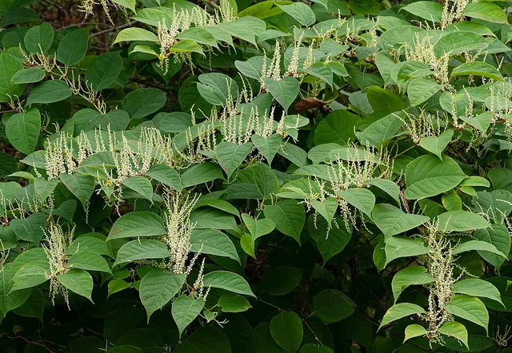

Desserts
Knotweed crumble
Knotweed crumble is made with wild Japanese knotweed shoots.

How do you make knotweed crumble?
Young knotweed stems under an oat crumble, like rhubarb.
Wild ingredients
- Japanese knotweed shoots (Reynoutria japonica): in season March to May
Watch the recipe

Video: Martin Milner on YouTube